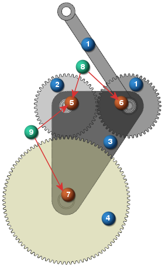

当齿轮耦合两个非固定运动副(亦即定义操作连杆与基本连杆之间的相对运动的运动副)的运动时，这两个运动副的基本连杆必须相同。
这个要求也适用于齿轮齿条副，即定义齿轮齿条副的滑动副和旋转副必须使用同一个基本连杆。
这个要求将以下面的万向齿轮为例进行说明。
蓝色的编号(1、2、3、4)表示连杆
褐色的编号(5、6、7)表示旋转副
绿色编号(8、9)表示齿轮连接
齿轮8耦合运动副5和运动副6的运动。
在运动副5中，操作连杆为连杆2，基本连杆为3。
在运动副6中，操作连杆为连杆1，基本连杆为3。
齿轮8可以耦合这两个运动副的运动，因为连杆3是这两个运动副共同的基本连杆。
齿轮9耦合运动副5和运动副7的运动。
在运动副5中，操作连杆为连杆2，基本连杆为3。
在运动副7中，操作连杆为连杆4，基本连杆为3。
齿轮9可以耦合这两个运动副的运动，因为连杆3是这两个运动副共同的基本连杆。
